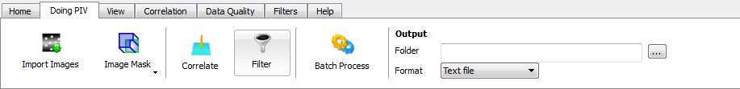

The first step to any PIV processing is to get the image pairs that you will be processing. If you do not have any image pairs of your own that you wish to use, then we have some provided at:
Once you have one or more image pairs, you need to import them to the program. To do this, navigate to the "Doing PIV" tab on the ribbon bar and select the "Import Images" button:
This button launches the image import window in which you can navigate to the directory containing your image pairs. Once you have selected your folder, the program will find any valid image files and display them in a new browser.
In the Image Import browser:
If you are importing a sequence images, openpiv will apply a heuristic to try and generate a sequence of image pairs. Currently, the two heurstics are:
The default settings are for interrogation windows of 32x32 pixels and 50% overlap. These settings are easily changed by navigating to the "Correlation" tab on the ribbon bar and using the drop-down menu and forms that can be found there. For more detail on the processing parameters, see here.
To process the images, return to the "Doing PIV" tab on the ribbon bar and click the "Correlate" button:

There are default filter settings which should be suitable for some users; however, changes can be made by navigating to the "Filters" tab on the ribbon bar. For details on the filtering parameters, see here
Once the filter settings are set, navigate back to the "Doing PIV" tab on the ribbon bar and click the "Filter" button:

If every step worked, you should now have a correlated image pair displayed in the viewer with a text file called "OpenPIV00000.dat" in the directory which contained your image pairs (unless you've changed the output directory).
For more details on how data is output, see here.